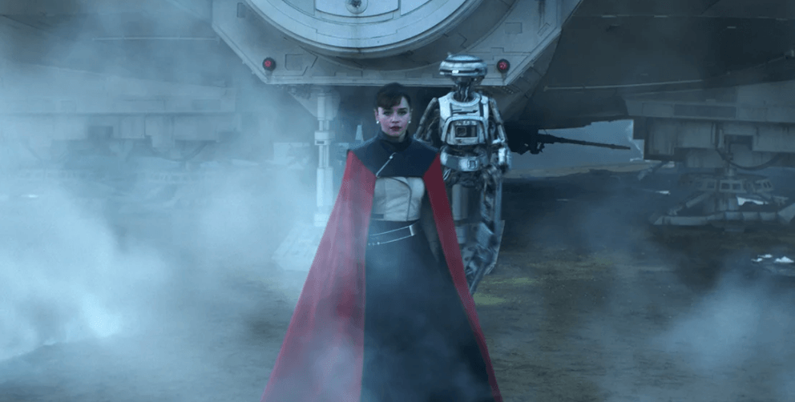
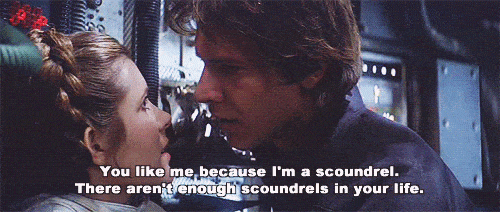

Lucasfilms seems to have learned a lesson from the power of Return of Kings’ $4 million boycott. Rising from the ashes of feminist self-immolation, Solo is a man’s film which takes no hostages in describing the reality of human frailty and the raw power dynamics of society.
For years, Hollywood has been attempting to portray a romantic narrative which somehow combines women’s go grrl masculine competence with men’s gentlemanly noblesse oblige. This dilemma finally went critical during Tinseltown’s scramble to pay its Danegeld-dues to the impending #metoo-wave of casting-couch feminists.
The schoolmarm heroine and unintentional slapstick of The Last Jedi bore witness to the bankruptcy of the sexual revolution and the collapse of the Romantic epoch. Audiences had finally had enough of watching the drab suburban platitudes of political correctness – even if they were transposed to a galaxy far far away – and walked out.
Rey, telling someone to write lines after class.
And so it has arrived: the first post Sexual-Revolution Fairytale. I’ll use the first act to illustrate my point, but you can skip to the next sub-heading if you don’t want this spoiler.
The plucky knave Han Solo (Alden Ehrenreich), is separated from from his passably feminine sweetheart, Qi’ra (Emilia Clarke) by powers of state beyond both of their control. For years he strives up through the military ranks of the emerging Empire, defecting, scamming, double-crossing, camping out with bandits, gambling on credit, running rackets for dangerous criminals, but his goal always the same: to rescue his fair lady from her enslavement on distant Corellia. Imagine the scene, then, when he finally gets his big break, only to discover his sweetheart is already a guest among the shimmering and svelte guests at his new boss’ luxurious drinks party.
It speaks to man’s reality rather than his aspirations that the mechanism of female mercenary ascent (at least for the hotties), leaves a man’s (dis)honest day’s work in the dust. There is little to no attempt to disguise, excuse or explain this in terms of morality on screen. After Han’s years of risking life and limb Qi’ra was able to rise further than him simply by spreading her legs. In its portrayal of the bittersweet truth, Solo earns itself a gravitas which more than compensates for the sense of disappointment that its chief protagonist mush choke back.
Of course – a lot happens after that and their relationship continues a haphazard development, but it is refreshing to see that hypergamy on screen is finally beginning to match hypergamy in real life.
Solo is obviously meant to be taken as an aside to the main Star Wars franchise – which may be because or why they dared to push the boat out on the social narrative. There’s no classic opening crawl and very little music from the original series. Perhaps I’m reading too deep into it, but there seems to be slight homage to the Yuge orchestral scores of late Imperial Russia. Certainly, the great-coats and mud trenches of Han’s youth build an association with the battlefields of the First World War – whereas the original series seemed to take its aesthetic cues from Communist East Germany (Rebellion), WWII Japan (Empire), and the cockpit of Enola Gay (Millenium Falcon).
In its cinematography, Solo struck just the right balance between rugged simplicity, (Han and his merry company of toxic males camp like Balkan partisans in the mountains of Vandor-1), and extravagant space monsters (you get to see a mile-wide Octopus get sucked into a black-hole).
Continuing a theme of increasingly self-conscious droids, Solo makes a brilliant mockery of Social Justice Warriors with a very ugly female robot whose circuits are possessed with a familiar mantra about her ‘oppressive organic overlords.’ The droid also harbors a badly suppressed crush on the young Lando Calrissian. This is not the sort of joke Lucasfilms would have made a year ago and I’m giving RoK the full credit.
For the first time, we have the true explanation of how Han Solo became the roguish asshole who Princess Leia later fell for aboard the Millennium Falcon.
Look and learn:

The account of Han’s maturation (red-pilling?), is ultimately realistic and unembellished with curmudgeonly finger-wagging and ‘man up’ spin. The lack of effort to rationalise female behaviour as always and everywhere good speaks of a deep shift that we can now expect to see in the substructure of movie narratives. The pendulum is swinging back, and Lucasfilms is heading the charge (just behind RoK, of course).
Solo is a man’s film – go and see it.
Read Next: The Quality Of Modern Movies Signals Our Cultural Decline